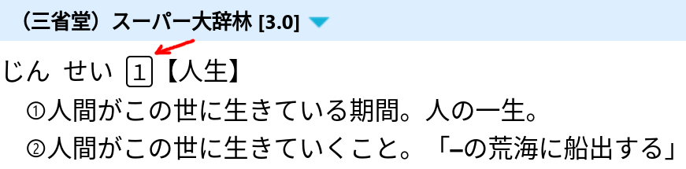
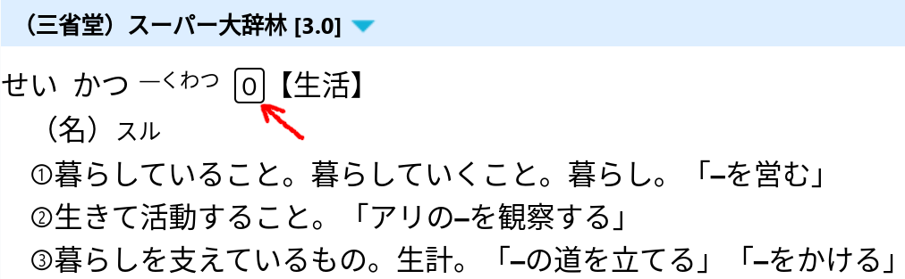
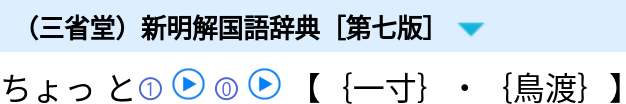
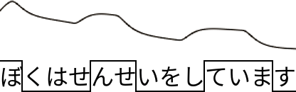
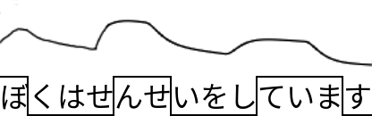

Japanese Pitch Accent Primer
Correctly accenting Japanese words when you speak is essential for sounding like a native speaker, and in some situations essential for communication. In this article, we will introduce you to the way accents work in Japanese, help you understand how to determine the correct accents of words and sentences, show you some commonly confused word groups, and explain how to look up accents in Japanese dictionaries.
Preparations
Ensure that you have installed GoldenDict, Qolibri, or that you have imported monolingual dictionaries into Rikaitan.
You need access to monolingual dictionaries
because they provide information about the pitch accents of words.
In particular,
大辞林 (or スーパー大辞林), 新明解, and NHK日本語発音アクセント辞典
contain pitch accent information,
so you need to import them.
Downloads are listed here.
What are pitch accents?
Japanese is a pitch-accented language. Slight differences in the pitch of sounds are used to differentiate words and convey sentence structure. This is different from a stress-accented language such as English, where certain sounds are emphasized by changing both the pitch and the duration. In Japanese, the duration of each sound that makes up a word (known as a 'mora') remains consistent, and only the pitch varies.
As a result of this rhythmic consistency, it is sometimes inaccurately claimed that Japanese does not have accents. However, this is not true. The pitch does vary within words and sentences. If you do not reproduce this accurately when speaking, your Japanese will not sound natural. In some cases, multiple words use the same sounds but differ in pitch, so you may actually be hard to understand if your pitch is incorrect.
Intonation
In Japanese, pitch accent is correctly referred to as 高低アクセント. However, casually, Japanese speakers may mistakenly call it イントネーション. While this is incorrect, when a native Japanese speaker who is not a linguist tells you that your intonation is bad, they most likely mean that you need to work on your pitch accent.
Do I need to learn pitch accent?
Having correct pitch accent improves your speaking and allows you to sound native or almost native. If you're doing AJATT, you've been listening to Japanese a lot, and your listening ability and phonetic awareness is really strong. Having great listening skills thanks to AJATTing leads to naturally acquiring a significant portion of native pitch accent, much like native speakers who never consciously study pitch accent. You will never confuse 橋 with 箸, or 神 with 髪. You will be better than 90% of gaijin out there.
However, based on our observations, even AJATTers typically do not achieve native-level pitch accent through immersion alone. Their pitch accent is usually only 50%, maybe 60% correct. So they still make lots of mistakes when they speak. Because we read a lot, use text-based flashcards, and use dictionaries, we progress faster in acquiring the language and achieving literacy, but we also damage our pitch accent and pronunciation. Avoiding this issue is hard because the alternative would be learning Japanese entirely through listening, identical to how infants learn. Obviously, it will take much longer to become fluent this way. And it's impossible to sell this approach to beginners who initially feel overwhelmed by their inability to understand anything during immersion and will refuse to listen to white noise for many months. So, most AJATTers learn the usual way, by utilizing reading, dictionaries, and text-based flashcards to speedup acquisition.
To sum it up, if you want to narrow the gap between yourself and native speakers in terms speaking ability, studying pitch accent is a good idea. If not, it's perfectly fine not to learn it. That said, every once in a while you run into situations where understanding pitch accent is necessary for comprehension. Some jokes in Japanese involve pitch accent as well. Even if you don't want to live in Japan and speak to natives, knowing a little about pitch accent can improve your immersion experience.
Mora
When you read about Japanese pitch accents, you will often come across the term "mora", which is a linguistic term used to refer to a single "unit" of sound in a language.
Note: "mora" is singular, while the plural form is usually "moras" in modern English. But since it is derived from a Latin word, "morae" is also acceptable.
A mora can be defined as a single kana character
excluding small kana (ゃ,ゅ,ょ but not っ),
optionally followed by a small kana.
Each mora is given the same amount of time when pronounced.
Examples:
にゃis one mora.あis one mora.ー(long vowel mark) and smallっeach count as one mora.東京(とうきょう)has 4 moras:と,う,きょandう.借金(しゃっきん)has 4 moras:しゃ,っ,き,ん.
Mora vs syllable
In English, we use the term "syllable" to describe the sounds that make up a word. Although the terms "syllable" and "mora" are sometimes used interchangeably, they have slightly different meanings. Both syllables and moras refer to the sounds that make up words in a language. In a language such as English, which is not a rhythmic or timed language, the sounds that make up a word may have different durations. Thus, the standard "unit" of sound is a syllable. In contrast, Japanese is a rhythmic language where each consecutive sound has the same duration. Therefore, the standard unit of sound is a mora.
Pitch number
Japanese dictionaries utilize pitch number notation to define pitch accents. This notation is used in monolingual dictionaries and provides the shortest way for readers to understand the accent of a word. If you know the number, you know the accent. For more details, see the linked article.
The pitch accent number indicates the position of a mora
after which the tone of voice drops from high to low.
The first mora has number 1,
the second mora has number 2,
and so on.
0 is used to indicate that there is no downstep.

Look up 人生 in スーパー大辞林

Look up 生活 in スーパー大辞林
In order to use this notation,
just count the number of moras in the word.
Remember that small kana symbols (except for っ) are included with the previous character.
So, きよ is two moras, but きょ is only one.
When the pitch of a compound word is based on the pitch of the words it comes from,
the pitch of each word is shown joined by a hyphen (-).
Dialects
This guide explains the pitch accents of words in 標準語 (ひょうじゅんご), or "Standard Japanese", which is the form of Japanese taught in schools and used by NHK announcers. In the real world, accents vary significantly across Japan, meaning that a single word can be pronounced differently depending on the region. Even in Tokyo, the way people speak differs from Standard Japanese despite the fact that 標準語 is often referred to as "Tokyo dialect".
Words with Multiple Pitch Accents
There are cases where even in 標準語
one word can have several different pronunciations.
Where that happens,
Japanese dictionaries display each of the possible options,
with the most common listed first.
When you look up such a word,
you will see several pitch accent numbers.
For example,
ちょっと (a little) has two accents, 1 and 0.

Look up ちょっと in 新明解国語辞典.
In real life one of the accents is usually more common than the others, but you cannot trust the dictionary 100% to determine which pronunciation is most commonly used by native speakers. To tell which accent is dominant and how you should say the word correctly, you need to listen to native speakers and find out how they say it.
Accent patterns for Japanese words
All Japanese words follow one of just 4 pitch accent patterns. If you ensure that your speech always uses one of the four patterns, you will sound natural 90% of the time, even if you occasionally use the wrong pattern. The most "unnatural"-sounding Japanese comes from using a pitch pattern that does not actually exist in Japanese, because it is a mistake that no native speaker would ever make. Let's take a look at these patterns one by one.
Heiban
The term 平板 (へいばん) literally means "flat board", so this accent pattern is generally understood to mean "accentless", or a flat pitch pattern. In any 平板 word with more than one mora, the first mora is pronounced with a low pitch, while all subsequent moras are pronounced with a high pitch. Any particle that follows the word is also pronounced with a high pitch.
Since the pitch does not drop in heiban words,
in monolingual dictionaries all 平板 words are represented by a 0.
Examples:
- 気 (spirit; mind).
- In isolation: き
- With a particle: きが
- 国 (country).
- In isolation: くに
- With a particle: くにが
- 時間 (time).
- In isolation: じかん
- With a particle: じかんが
Atamadaka
頭高 (あたまだか) means "head high". In this pattern, the first mora is high, and then all subsequent moras are pronounced with a low pitch. The drop in pitch is more pronounced than the slight rise in pitch we see at the beginning of 平板 words. Any particle following the word is also pronounced with a low pitch. Essentially, 頭高 is the opposite of the 平板 pattern.
Since the pitch drops after the first mora,
in monolingual dictionaries all 頭高 words are represented by a 1.
Examples:
- 何時 (いつ, when).
- In isolation: いつ
- With a particle: いつが
- 天気 (weather).
- In isolation: てんき
- With a particle: てんきが
- 毎日 (every day).
- In isolation: まいにち
- With a particle: まいにちが
Nakadaka
中高 (なかだか) means "middle high", and the key characteristic of this pattern is that the pitch drops from high to low at some point within the word. The first mora is low, and any particle following the word is also pronounced with a low pitch. Similar to 平板 words, the rise in pitch at the beginning of the word is smaller than the drop in pitch that occurs later. All 中高 words have at least three moras.
Since the pitch drops somewhere before the end of a word,
in monolingual dictionaries 中高 words are represented by numbers such as 2, 3, 4, 5, etc.
However, the pitch number cannot be equal to the number of moras.
There is another pattern name for those words.
Examples:
- 一つ (one). Accent: 2.
- In isolation: ひとつ
- With a particle: ひとつが
- スポーツ (sports). Accent: 2.
- In isolation: スポーツ
- With a particle: スポーツが
- 工場 (factory). Accent: 3.
- In isolation: こうじょう
- With a particle: こうじょうが
Note: In Japanese, the use of 'う' to lengthen the 'お' sound is primarily a written convention. For instance, When pronouncing a word such as 工場(こうじょう), the こ sound is simply extended, resulting in こお (or 'こー' as they also spell it). The 'う' is not pronounced. Listen to the example above to understand it better.
Odaka
尾高 (おだか) means "tail high". In this pattern, the first mora is low (unless the word only has a single mora), then the pitch rises and remains high until the end of the word. Any particle following the word has a low pitch.
Since the pitch drops immediately after the end of odaka words, in monolingual dictionaries the pitch number of an 尾高 word is equal to the total number of moras in it.
Examples:
- 木 (tree). Accent: 1.
- In isolation: き
- With a particle: きが
- 川 (river). Accent: 2.
- In isolation: かわ
- With a particle: かわが
- 二つ (two). Accent: 3.
- In isolation: ふたつ
- With a particle: ふたつが
Kifuku
You may encounter the term 起伏式 (きふく‐しき) describing pitch accent patterns. 起伏式 literally means "undulating form", and it is a collective term representing the three patterns 頭高, 中高 and 尾高. Another way to understand these accent patterns is that 平板 starts low and stays high, whereas each of the other patterns starts low, goes high, and then goes low again (in other words, undulates).
Since this is just an umbrella term, kifuku is not one of the 4 pitch accent patterns.
- Flat accent. じかんが
- Undulating accent. ひとつが
Rules for determining pitch accents
Rule 0. Any word that is not a particle has a fixed pitch accent.
The pitch accent will remain the same whenever you encounter the word. If you learn the pitch accent of a particular word (and pitch accent rules), that's all you need to accent it correctly. However, you may not always remember the pitch of a word. Below we will cover some rules that will help you guess correctly most of the time.
Rule 1. If the first mora is low, the second is high, and vice versa.
If you look at the four basic patterns, you'll notice they all have something in common. If the first mora has a high pitch, the second has a low pitch. Conversely, if the first mora has a low pitch, the second mora has a high pitch.
The pitches of the first and second moras in a standalone word are always different. It is impossible for every mora in a word to be either entirely high or entirely low.
- Low to high. くに
- High to low. いつ
Rule 2 Once pitch drops, it stays low.
We can see something else from our 4 patterns. Once the pitch of a word goes low, it remains low until the end of the word. No matter how long a word is, there will only ever be at most three pitches (low, then high, then low again).
Note: This rule does not apply to particles or all inflected forms. We'll cover that in Particles below.
- 一つ (one). ひとつ
- スポーツ (sports). スポーツ
- お母さん (mother). おかあさん
- お巡さん (policeman). おまわりさん
Rule 3. If in doubt, guess 平板.
If you are not sure about the correct accent of a word, this rule will be particularly useful. Among the 10,000 most commonly used words in Japanese, the 平板 pattern is used about 55% of the time. Therefore, if you are completely unsure of a word's accent, guess 平板 (start low, then go high and stay high). You will be correct more often than not.
If you have any reason to believe a word is not 平板, the next most common pattern is 頭高, which is used in about 25% of the 10,000 most useful words. In this case, start high, then drop to low on the second mora and stay low.
After 平板 and 頭高, the next most common is 中高, which is used about 15% of the time. However, it is hard to guess where pitch drops in 中高 words because the 中高 pattern covers all words which go low at some point in the middle of the word. The classification alone does not give you enough information to determine where in the word you should go low.
Additional Considerations
There are two more points to keep in mind when you are trying to determine pitch accent.
First, the accent of a word may change if the word is incorporated into a larger word. We will cover this in Caveats below. For example, when two heiban nouns form a compound word, they become nakadaka, and the drop occurs after the first mora of the second word. If you combine 携帯 けいたい (0) and 電話 でんわ (0), the result will be 携帯電話 けいたいでんわ (5).
Second, when combining words into sentences, you need to understand how to address the pitch of particles and how to handle the overall pitch of the sentence. We will cover this in Pitch accents in sentences below. The pitch can be modified based on the other words in the sentence and the applicable rules. For example, odaka nouns followed by the particle の become heiban. If you take the phrase 部屋の中, it will be pronounced as へやのなか.
There are countless pitch accent rules like these.
Commonly confused words
Most of the time, if you get the pitch accent of a word wrong, your Japanese will sound a little odd, but it will be perfectly understandable. However, in certain situations, it could lead to an unfortunate miscommunication. Some Japanese words which use the same sounds (known as 'homonyms') are distinguished by their pitch accent. Therefore, if you use the incorrect accent, you are actually using the incorrect word! Below are a few of the most common and important examples.
- ひ.
- 日 (day). Accent: 0. ひが
- 火 (fire). Accent: 1. ひが
- き.
- 木 (tree). Accent: 1. きが
- 気 (spirit). Accent: 0. きが
- いち.
- 一 (one). Accent: 2. いちが
- 位置 (position). Accent: 1. いちを
- かみ.
- 紙 (paper). Accent: 2. かみが
- 髪 (hair). Accent: 2. かみが
- 神 (god). Accent: 1. かみを
- はな.
- 花 (flower). Accent: 2. はなを
- 鼻 (nose). Accent: 0. はなを
- あさ.
- 朝 (morning). Accent: 1. あさを
- 麻 (cannabis, flax). Accent: 2. あさを
- ようい.
- 用意 (use). Accent: 1. ようい
- 容易 (ease). Accent: 0. ようい
- おもい.
- 重い (heavy). Accent: 0. おもい
- 思い (thought). Accent: 2. おもい
- かう.
- 買う (to buy). Accent: 0. かう
- 飼う (to have a pet). Accent: 1. かう
- はし.
- 橋 (bridge). Accent: 2. はしを
- 端 (edge). Accent: 0. はしを
- 箸 (chopsticks). Accent: 1. はしを
- かた.
- 肩 (shoulder). Accent: 1. かたを
- 型 (type). Accent: 2. かたを
- 方 (person). Accent: 2. かたを
Particles
Particles don't really have their own standalone pitch accent in the same way that other parts of speech do. The pitch of a particle is determined by the accent type of the word it follows. For 平板 words, the pitch of the particle is high.
- 会社 (company). Accent: 0. かいしゃが
For 頭高, 中高 and 尾高 words, the particle pitch is low.
- 世界 (world). Accent: 1. せかいが
- 日本 (Japan). Accent: 2. にほんが
- 言葉 (word). Accent: 3. ことばが
Polite forms of verbs
When ます attaches to any verb, it overrides the verb's original pitch accent. The original accent of the verb does not matter.
- ます. Drop after ま.
- 行く. Accent: 0. いきます
- 見る. Accent: 1. みます
- 食べる. Accent: 2. たべます
- ました. Drop after ま.
- 行く. Accent: 0. いきました
- 見る. Accent: 1. みました
- 食べる. Accent: 2. たべました
- ません. Drop after せ.
Also applies to …ませんでした.
- 行く. Accent: 0. いきません
- 見る. Accent: 1. みません
- 食べる. Accent: 2. たべません
For other forms, the pitch depends on the category of verb.
Heiban verbs
Note: Most Japanese words are 平板, and this is especially true for verbs. Nearly 65% of the most useful 1,000 verbs in Japanese are 平板.
When a 平板 verb is inflected, most inflections retain the 平板 pattern.
Inflections of 平板 verbs with the 平板 pattern:
- Plain. 言う (say). いう
- Plain negative. 言わない (does not say). いわない
- Past. 言った (said). いった
- "Te form". 言って (saying). いって
- Potential. 言える (can say). いえる
- Passive. 言われる (is said). いわれる
- Causative. 言わせる (make say). いわせる
The following inflections of 平板 verbs do not follow the 平板 pattern, and these inflections do not have the same pattern in non-平板 verbs.
Inflections of 平板 verbs with the 中高 pattern:
- Past negative. 言わなかった (did not say). いわなかった
- Conditional. 言えば (if I say). いえば
- Volitional. 言おう (want to say). いおう
Non-heiban verbs
Verbs that are not 平板 are either 頭高 or 中高. There are no 尾高 verbs. Almost all of the 頭高 verbs have only two moras. Most non-negative inflections of 頭高 verbs are also 頭高.
Inflections of 頭高 verbs:
- Plain. 見る (see). みる
- Past. 見た (saw). みた
- Te. 見て (seeing). みて
- Conditional. 見れば (if I see). みれば
中高 verbs are a little more difficult to predict, but some generalizations do exist.
The downstep in the plain form always occurs before the final mora.
- Plain. 食べる (eat). たべる
For the past, -te, and conditional forms, the downstep is on the third-to-last mora.
- Past. 食べた (ate). たべた
- Te. 食べて (eating). たべて
- Conditional. 食べれば (if I eat). たべれば
For negative forms of both 頭高 and 中高 verbs, the downstep comes on the mora before the な. So, for two-mora verbs such as 見る, negative forms are also 頭高, and for longer verbs, they are 中高.
- Plain negative. 見ない (doesn't see). みない
- Past negative. 見なかった (didn't see). みなかった
The remaining common forms of both 頭高 and 中高 verbs are 中高.
- Potential / passive. 見られる (is seen / be able to see). みられる
- Causative. 見させる (make see). みさせる
- -nagara. 見ながら (while seeing). みながら
Adjectives
The vast majority of 形容詞 (い-adjectives) are 中高 with the downstep occurring before the い. In most cases, any conjugated form shifts the downstep one mora back.
- Plain. 暑い (hot). あつい
- Past. 暑かった (was hot). あつかった
- Te. 暑くて (hot...). あつくて
Negative forms of い-adjectives are one of the rare exceptions to the 'once you go low, stay low' rule. Negative forms function as if they are a combination of the pitch pattern of the く form of the adjective, plus a suitably conjugated form of the 頭高 word ない (in other words, the な is high).
- Plain. 暑くない (not hot). あつくない
- Past. 暑くなかった (was not hot). あつくなかった
形容動詞 (な-adjectives) can be 頭高 or 中高 (most 2-mora and 3-mora words) or 平板 (most 4-mora words consisting of kanji only).
- 静か (quiet). Accent: 1. しずかな
- 安全 (safe). Accent: 0. あんぜんな
- 賑やか (lively). Accent: 2. にぎやかな
Negative forms of な-adjectives are also exceptions to the 'once you go low, stay low' rule. Negative forms function as if they are a combination of the dictionary form of the adjective, plus では with low pitch, plus a suitably conjugated form of the 頭高 word ない.
- Plain. 静かではない (not quiet). しずかではない
- Past. 静かではなかった (was not quiet). しずかではなかった
Sentence-ending words
Many common sentence-ending words, such as だ, です, でしょう, だろう, みたい, etc., follow a simple pattern: if the last mora of the previous word is low, they start low and stay low. If the last mora of the previous word is high, they start high and go low after the first mora.
- 秋です (is autumn, it is autumn). あきです
- 学生です (is a student, I'm a student). がくせいです
Pitch accents in sentences
So now we are well equipped to pronounce individual words correctly, but what happens when we put words together in sentences? How do things change? What does the overall pitch pattern of a sentence look like? We can determine sentence-level pitch by thinking of it as a combination of three rules.
Rule 1. Pitch stays high across word boundaries until it reaches a downstep.
When a word that ordinarily has a low pitch on the first mora (such as 中高 or 平板 words with 2 and more moras) follows a mora with high pitch, the pitch remains high on the first mora of the word.
Let's use this sentence as an example:
私は日本語を勉強しています。 (I am studying Japanese.)
Looking at the words individually, we would expect the following pattern:
わたしは にほんごを べんきょう して います
When we combine the words, we stay high until the first downstep, which occurs when we reach the ま of います. So the lower pitch at the start of にほんご, べんきょう, して and います is omitted, and the pitch stays high:
わたしはにほんごをべんきょうしています
Rule 2. After a downstep, the next rise in pitch is not as high as the downstep.
This pattern is known as 'terracing', because it creates a pitch pattern that looks like a series of steps going down from left to right. In fact, the whole pitch of a sentence starts high and gradually shifts downwards.
Let's use this sentence as an example:
僕は先生をしています。 (I am a teacher.)
Unlike our first example, we now have three separate downsteps: in 僕, 先生 and しています. So, looking at the words individually, we expect to see this:
ぼくは せんせいを して います
Applying our first rule, we would expect to see something like this:
ぼくはせんせいをしています
In fact, this is basically correct. But simply alternating between two levels of pitch sounds unnaturally robotic, and rule 2 tells us that the high pitch of ぼ is a little higher than the high pitch of んせ, which in turn is a little higher than the high pitch of ています. Here's a diagram generated by the OJAD tool.
Note: OJAD is not perfect and makes many mistakes, but it is sufficient in this example. You don't really need OJAD that much, and it is not particularly useful because, essentially, either you already understand all the pitch accent rules at play, and you don't need the answer, or you don't know some of the rules. In that case, this site won't be very helpful because it doesn't actually explain the rules. It only gives you the final answer.
Rule 3. Words you want to emphasize should have a somewhat higher pitch.
The pitch pattern of the word to be emphasized does not change, but its overall pitch relative to its neighbors is somewhat higher. Using the same example as Rule #2, let's say we want to emphasize the fact that we are a teacher (as opposed to an astronaut). In English, we would do this by stressing the word 'teacher'. In Japanese, we do it by giving the word せんせい relatively higher pitch.
Notice how the overall rise-fall pattern is the same, but now the word せんせい has the highest pitch.
Prosody
You will often encounter the term 'prosody' in connection with pitch accents. Prosody refers to the elements of real speech that convey meaning over and above the words themselves. A great example of prosody would be using rising pitch to indicate a question in a sentence that would otherwise be a statement. Looking at the sentence written down, you may not realize it is a question, but if you heard it spoken aloud, the prosody would make it obvious. In Japanese, prosody typically refers to changes in pitch at the sentence level, as described in the sections above.
Caveats
Japanese pitch accents are relatively straightforward, but as we have seen, they are not completely regular. Until repeated exposure trains your ear naturally, trying to remember the rules that govern accents can seem overwhelming. Try not to be discouraged. Correct accents can make you sound much more natural, but they are generally not vital for communication.
As we have seen, most words in Japanese are 平板, and this is especially true for verbs. The 平板 pattern does not exist in English, so the most common mistake beginners make is imposing an English accent pattern on Japanese 平板 words. In American English, words are most commonly accented on their second syllable, which corresponds most closely to a 中高 2 pattern, where the downstep occurs after the second mora of a word. Consider the word "America": Americans pronounce the ME with a slightly higher pitch and a slightly longer duration: a-ME-ri-ca. While this pattern does exist in Japanese, it is not the most common one, so you will often sound unnatural if you use it constantly.
One thing to be aware of is that numbers and counters are quite irregular. For example:
- 一つ (one) is 2
- 二つ (two) is 3
- 三つ (three) is 3
- 四つ (four) is 3
- 五つ (five) is 2
- 六つ (six) is 3
- 七つ (seven) is 2
- 八つ (eight) is 3
- 九つ (nine) is 2
The pitch accent of compound words is usually the combination of the pitch accents of the individual words. However, it is not uncommon for words to change their pattern when they are absorbed into larger words. For example:
- 日本 (Japan). Accent: 2. にほん
- 日本語 (Japanese language). Accent: 0. にほんご
- 日本人 (Japanese person). Accent: 4. にほんじん
- 日本海 (Japan Sea). Accent: 2. にほんかい
Ultimately, you have to memorize pitch accent of each individual word you care about. We think that learning pitch accents of the most common 2,000 words would be enough for most learners.
How to learn pitch accents
Congratulations! If you have read this far, you have already taken the most important step in mastering pitch accents by familiarizing yourself with the categories and the basic conventions.
The next step is to train your ear to recognize these categories when you hear them. If you do that, your brain will start to classify words into the correct categories automatically as you hear words in context. You will find that this "automatic learning" will significantly reduce the amount of rote memorization you need to do.
However, some rote memorization will still be necessary, in particular for the easily confused words mentioned above. Study those carefully and test yourself on them.
Finally, it is important to confirm that you can reproduce the correct accent even when you know it. There is no better technique for that than mimicking correct pronunciation. You can record yourself and then listen to yourself alongside the original to identify where you need to improve.
Resources
In Resources you can find resources for studying pitch accents and Japanese pronunciation in depth.
For a definitive written guide, you can't do better than one or both of these books:
- The NHK accent dictionary 「NHK日本語発音アクセント新辞典」.
- The Shin Meikai accent dictionary 「新明解日本語アクセント辞典 第２版」.
You can find both books in Resources, on Torrents, or in Zlibrary.